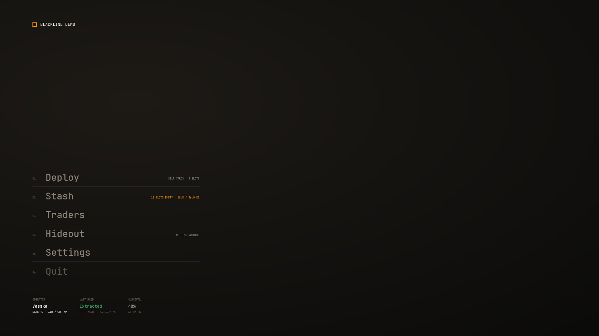

Theming
Every colour, size, font weight and duration in Blackline comes from one data asset. Change the asset and every component and screen follows. This page covers what the asset holds and how to put your own in place.
Try the main colour roles here. The preview uses the plugin's shipped values as its starting point.
The style asset#
The theme is a UNVSViewStyleAsset. The plugin ships one, /NVSBlackline/DA_BlacklineStyle, and the plugin's View Setup Definition names it as its Style Asset. Components never hold a colour of their own. They ask the asset for a role, such as Accent or TextDim, and only the asset knows the value.
Each component and each screen has a Style property. It is usually unset, and then the component uses the style asset of the View Setup Definition in force. If that names none that loads, it uses the class defaults of UNVSViewStyleAsset, which hold the same values as the shipped asset.
The asset's maps:
- Colors
TMap<ENVSViewColorRole, FLinearColor>. One entry per colour role.- EmphasisAlphaScale
TMap<ENVSViewEmphasis, float>. Alpha multipliers for states such as hover and disabled.- TypeRamp
TMap<ENVSViewTypeRole, FNVSViewTypeStep>. One text style per use.- Spacing, Metrics, CornerRadii
- Gaps, fixed element sizes and corner radii, in pixels.
- DurationsSeconds, Easing, SlamEasing
- Animation lengths and cubic bezier curves, written the same way as in CSS.
- Font, WeightTypefaces
- The font asset text renders with, and which of its typefaces each weight uses.
Colour roles#
ENVSViewColorRole has 121 roles. The ones you change first:
| Role | Shipped value | Used for |
|---|---|---|
Surface | #0B0B0A | Panel fill and the ground of most screens |
Accent | #E7840E | Selection, primary buttons, eyebrows |
TextPrimary | #EDE7DB | Body text and titles |
TextDim | #8B8276 | Secondary captions |
Success | #3A9C5F | Good news and positive figures |
Danger | #E56A6A | Bad news, such as an injury or a negative amount |
OnAccent | #100E0B | Text on a solid accent plate |
The rest cover specific states and surfaces: Border, SurfaceRaised and SurfaceInset, Critical and Warning, the button and toggle states (AccentHover, AccentPressed, ToggleTrackOn), and inks drawn over gameplay such as CrosshairDot and PromptInk. Each one carries a comment in Style/NVSViewStyleAsset.h saying where it is used.
A role missing from Colors draws magenta, so a gap in a custom theme is easy to spot on screen.
Emphasis#
Hover, pressed, disabled and similar states mostly reuse a role's colour with a different alpha. ENVSViewEmphasis names the steps and EmphasisAlphaScale holds the multiplier for each: Full 1.0, Raised 2.0, Reduced 0.55, Held 1.35, Faded 0.22, Lit 3.2, Struck 3.9. Tinted (0.13) and TintedRule (0.45) are absolute alphas for opaque category colours. Retune a step and every state that uses it changes together.
Type steps#
Text styles are named by use, so the names still fit after you resize them. ENVSViewTypeRole has steps such as Label, Body, Caption, Heading, Control, Title, MenuEntry and a set of HUD steps. Each is a FNVSViewTypeStep:
- SizePx
- Size in pixels. Slate sizes fonts in points drawn at 96 dpi, so the components set three quarters of this value as the Slate size.
- Weight
- A CSS weight from 100 to 900. It picks a typeface through
WeightTypefaces. - LineHeight
- A multiplier on the size.
- LetterSpacingEm
- Tracking in em.
For example, the shipped Title step is 26 px at weight 600, and Control, the caption inside a button, is 13 px at weight 600.
Fonts#
The plugin ships JetBrains Mono in /NVSBlackline/Fonts/: the composite font F_JetBrainsMono and its Regular, Medium, SemiBold and Bold faces. The shipped style asset uses it, with this weight map:
400 Regular
500 Medium
600 SemiBold
700 BoldSlate does no weight matching of its own, and an unknown typeface name silently falls back to the first one. So a weight with no exact entry uses the nearest mapped weight, preferring the heavier one on a tie.
JetBrains Mono is under the SIL Open Font License 1.1. The licence text ships in the plugin at Licenses/JetBrainsMono-OFL.txt, and CREDITS.md lists it. You can ship it in your game under that licence.
Using your own font#
- Import the font Import your font files and create a composite Font asset with one typeface entry per weight.
- Point the asset at it In your style asset, set
Fontto the new Font asset. - Map the weights Edit
WeightTypefacesso each weight the type ramp uses names a typeface entry in your font.
FontFamily and FontFallbacks are for reference only. Slate cannot load an operating system font by name, so Font is what renders. With Font unset, text uses Slate's default font.
Layout tokens#
- Spacing (ENVSViewSpacingStep)
Micro3,Tiny4,Small6,Base8,Medium10,Large12,Section16,Region32. Region is the gap between a label column and its control.- Metrics (ENVSViewMetricRole)
- Fixed sizes such as
GridCell(60, the painted inventory cell),ButtonHeight,SlotTile,DollCellandBeltCell. - CornerRadii (ENVSViewCornerRadius)
Sharp0,Soft3 for outlined boxes,Pill1000.- DurationsSeconds (ENVSViewDurationStep)
Fast0.08,Standard0.12,Slow0.16,Entrance0.20, plus the deploy sequence steps such asSlam0.42.
Reading tokens yourself#
Your own widgets can read the same tokens. The asset's getters are Blueprint pure:
const UNVSViewStyleAsset* Style = UNVSViewSettings::GetStyleAsset();
if (Style != nullptr)
{
const FLinearColor Accent = Style->GetColor(ENVSViewColorRole::Accent);
const FLinearColor Hovered = Style->GetColorAtEmphasis(ENVSViewColorRole::Border, ENVSViewEmphasis::Raised);
const FNVSViewTypeStep Body = Style->GetTypeStep(ENVSViewTypeRole::Body);
const float Gap = Style->GetSpacing(ENVSViewSpacingStep::Base);
}A widget derived from UNVSViewStyledWidget also has ResolveColor, ResolveTypeStep, ResolveSpacing and the rest, which respect its own Style override.
Swap the style asset#
- Duplicate the shipped asset Copy
DA_BlacklineStyleinto your own content folder, so a plugin update never overwrites your theme. - Edit it Change the roles in
Colors, the steps inTypeRampand anything else you need. - Select it Make your own View Setup Definition from right-click > Miscellaneous > Data Asset, or open the one your game already has, and set Style Asset to your copy. A game's own setup wins over the one the plugin ships, so no other setting is needed.
The asset is resolved once per setup and cached. A new style asset applies to the next widget that is built, so reopen a screen to see it. Values are read when a widget is built, so editing a role while the game runs does not repaint widgets already on screen.
To theme one screen differently, set the Style property in that screen's class defaults. Its own components fall back to the setup's asset unless you set theirs too.
The colours a kind of toast uses are roles too, picked on its Notification Kind Definition. See Notifications.
What you see#
With your copy selected and its Accent changed, reopen the hub. Selected rows, primary buttons and eyebrows draw in the new accent, and nothing else moves.
